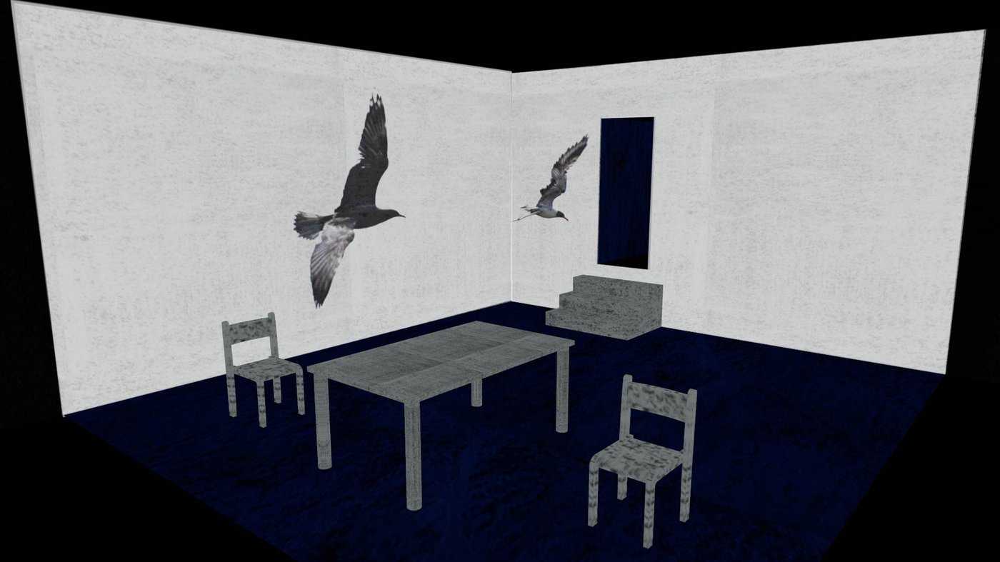
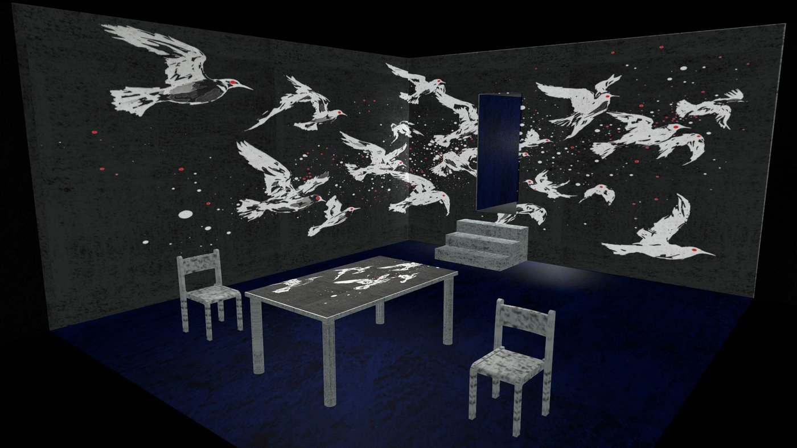

Logline & Concept
Anton Chekhov's classic tragicomedy about the futility of ambition and the search for a new theatrical language, staged with a fresh, youthful perspective. On a summer estate by the lake, generations and dreams collide: the aging actress Arkadina, her idealistic son Treplev, the young dreamer Nina, and the celebrated writer Trigorin — all love and suffer against the indifference of fate. This "comedy in four acts" is filled with unfulfilled hopes, broken hearts, and irony. At Beit Zvi's training theatre, the play was presented as a graduation production, emphasizing the generational conflict: the old world of art versus the new — disciple against master, new forms against tradition.
Creative Team
- Director: Igor Berezin (guest lecturer at Beit Zvi)
- Video Design: Nick Dreyden
- Venue: Beit Zvi School Theatre, Eli Leon Hall, Ramat Gan
Premiere
October 26, 2025 — Eli Leon Hall, Ramat Gan (graduation performance of the 2025 class).
Visual & Multimedia Concept
The production was staged with a youthful, experimental energy. At the back of the stage stood a giant semi-transparent scrim. Behind it, at key moments, appeared projected silhouettes of a seagull — Treplev's dream-symbol — designed by Nick Dreyden. The image evolved across the acts: from a poetic, romantic vision, through an aggressive and threatening apparition, to a shockingly naturalistic form. Dreyden's video design, integrated into the performance via projection mapping, was carefully crafted using an original neural-network algorithm. The projections also incorporated subtle "like-projection" elements — fleeting, social-media-like overlays that resonated with the contemporary gaze of the students performing Chekhov. This visual layer became both a symbol and a psychological mirror, amplifying the play's central metaphor without overwhelming the actors.
Reception
Blog posts following the open performance noted: "The young actors infused the classic with living energy, making Chekhov speak to a new generation." The evolving video projection of the seagull was also highlighted: "It's wonderful that students are unafraid of experiment." Some audience members remarked that the restrained use of multimedia did not diminish the play's impact but rather sharpened attention to the nuances of performance and Chekhov's text. For Nick Dreyden, this project marked an important step in integrating into the Israeli theatre landscape — bringing experimental video design into the framework of a student graduation production.
Gallery

